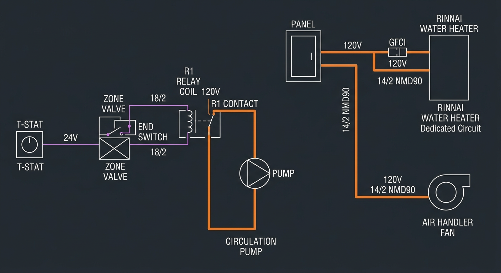

Electrical & Heat Call Sequence
How the thermostat call propagates through the system. The Rinnai has NO external control wiring for heating. It fires purely on flow detection. The entire control chain is: thermostat opens valve, valve starts pump, pump creates flow, flow activates Rinnai.
Heat Call Sequence (7 Steps)
 Click to zoom
Click to zoom
Read left to right: 1. Room temp drops below setpoint. 2. Thermostat closes R-W circuit, zone valve motor opens (~15 sec). 3. Zone valve end switch closes when fully open. 4. End switch energizes relay, pump starts. 5. Rinnai's internal flow sensor detects water movement (min 0.4 GPM), burner fires to 140°F. 6. Hot water flows through fan coil, air blows across coil. 7. Warm air enters room. When thermostat satisfies, reverse sequence shuts everything down.
Wiring Diagram

Click to zoomControl circuit (left): T-STAT sends 24V AC to zone valve motor via 18/2 thermostat wire. When valve fully opens, the end switch energizes relay coil R1. R1 contact switches 120V to the circulation pump via 14/2 NMD90. Power circuits (right): Dedicated 15A GFCI circuit to Rinnai. Separate circuit to air handler fan. Note: the diagram shows two zone paths but this is a single-zone system. Read only the top path.
| From | To | Wire | Voltage |
|---|---|---|---|
| Thermostat | Zone valve (V8043E) | 18/2 thermostat wire | 24V AC |
| 40VA Transformer | Zone valve power | 18/2 | 24V AC |
| Zone valve end switch | Pump relay coil | 18/2 | 24V AC |
| Pump relay (line side) | Circulation pump | 14/2 NMD90 | 120V AC |
| Panel | Rinnai RXP199iN | 14/2 NMD90 | 120V AC (GFCI, dedicated) |
| Panel | Air handler fan | 14/2 NMD90 | 120V AC |
Zone Valve Cutaway (Honeywell V8043E)
 Click to zoom
Click to zoom
The zone valve is the key control component. When the thermostat calls for heat, the 24V motor drives the valve disc open against the spring return. When fully open, the end switch contacts close (normally open, close when valve fully open). This end switch is what triggers the pump relay. When the thermostat is satisfied, the motor de-energizes and the spring closes the valve. The end switch opens, killing the pump. No flow = Rinnai stops firing.